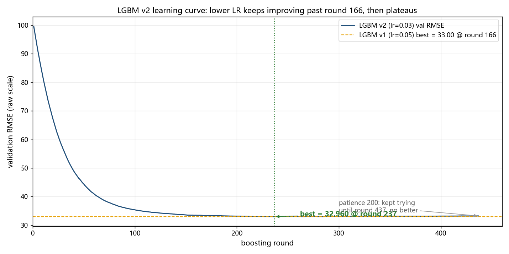

📊 Inter-uni Datathon Stream 2 · 北京多站点空气质量
预测 PM2.5 下一小时浓度（μg/m³）· 评分 RMSE（越低越好）· Random Forest 主导方法 · 协作：Hermes 总管 + 多 Agent
1. 模型成绩（验证集 2015-09→2016-02 供暖季，51,349 行）
| 模型 | 验证 RMSE | MAE | 说明 |
|---|
| 常数基线（主办方级别） | 102.04 | — | 全部预测训练均值 |
| 线性回归（无滞后） | 36.09 | — | 参照 |
| LightGBM | 33.00 | 16.00 | 参照（早停166轮） |
| LGBM v2（lr=0.03，237轮） | 32.96 | 16.10 | 单模型最优；但与RF更相似（相关0.9949），集成增益反降 |
| RF boxcox（实验） | 38.06 | 18.03 | 目标变换实验：raw 胜，如实记录 |
| Random Forest（主导） | 32.80 | 16.38 | 200树/深30/叶3 |
| 🏆 Ensemble 0.6RF+0.4LGBM | 32.58 | ~16.1 | 历史最优（已被 xst 超越） |
| Ensemble v2（0.55RF+0.45LGBMv2） | 32.60 | ~16.1 | v2集成备选：单模型更强但互补性降 |
| 🏆🏆 RF-xst（跨站特征） | 29.33 | 15.05 | +24跨站风输送特征，单模型大突破 |
| LGBM-xst（跨站特征） | 29.44 | 14.76 | 早停218轮 |
| 🥇 Ensemble-xst 0.55/0.45（当前主提交） | 28.96 | ~14.9 | ⭐ LB 实测 27.34（验证集保守 1.6） |
所有数字经独立重算验收（做判分离）。特征：119 个（污染物/气象滞后 1-24h 小时网格对齐 + 滚动统计 + 时间环），防泄漏设计（无 PM2.5 自身滞后）。
2. 提交文件（5 份，全部已校验：51,063 行 / id 顺序=模板 / 无缺失）
| 文件 | 验证 RMSE | 用法 |
|---|
| submission_ensemble_xst.csv | 28.96 | 🥇 当前主提交（LB 实测 27.34 ✅） |
| submission_ensemble_w0.60.csv | 32.58 | 历史最优（xst 之前） |
| submission_rf_raw.csv | 32.80 | 备选 |
| submission_lgbm.csv | 33.00 | 备选 |
| submission_ensemble_v2_w0.55.csv | 32.60 | 备选（v2集成） |
📌 打开任意 CSV：应看到两列 id, PM2_5_next_hour，共 51,063 行数据。📥 下载主提交 · RF版 · LGBM版 · v2集成版
3. 报告（点击打开，均含中英切换）
4. 关键图表

特征重要性：PM10 独大(72%) + CO(10%) → 实时污染物是下一小时 PM2.5 的最强预测信号（PM10 r=0.85）。
LGBM v2 长跑实验结论（训练曲线为证）

学习率 0.03 的模型跑到第 237 轮才触底（RMSE 32.96，优于原版 lr=0.05 的 166 轮/33.00）——证明"早停 166 轮"确实是次优早停，小步长多找到了 0.04 的精度。触底后它又试了 200 轮均无改进才停（437 轮），证明早停机制本身零浪费。但 v2 与 RF 预测更像（相关 0.9949 vs 0.9941），集成互补性下降，最终主提交仍是 v1 集成（32.576）。
5. 自查指南
① CSV：Excel 打开 → 51,063 行 + id 以 AQ_ 开头
② 成绩锚点：上传 submission_ensemble_w0.60.csv 到 Kaggle 拿 LB 分数
③ 原始材料：WSL 路径 \\wsl.localhost\Ubuntu-24.04\home\gaogao\workspace\beijing_aq
📊 Inter-uni Datathon Stream 2 · Beijing Multi-Site Air Quality
Objective: forecast next-hour PM2.5 concentration (μg/m³) · Metric: RMSE (lower is better) · Random Forest as the lead method · Built by: Hermes (manager) + multi-agent team
1. Model Results (validation: 2015-09 → 2016-02 heating season, 51,349 station-hours)
| Model | Val RMSE | MAE | Notes |
|---|
| Constant baseline (organiser-level) | 102.04 | — | predicting the global train mean |
| Linear regression (no lags) | 36.09 | — | reference |
| LightGBM | 33.00 | 16.00 | reference (early stopping @166) |
| LGBM v2 (lr=0.03, 237 rounds) | 32.96 | 16.10 | best single model; more similar to RF (corr 0.9949) → less ensemble gain |
| RF boxcox (experiment) | 38.06 | 18.03 | target-transform experiment; raw wins, reported honestly |
| Random Forest (lead) | 32.80 | 16.38 | 200 trees / depth 30 / leaf 3 |
| 🏆 Ensemble 0.6 RF + 0.4 LGBM | 32.58 | ~16.1 | previous best (superseded by xst) |
| Ensemble v2 (0.55 RF + 0.45 LGBMv2) | 32.60 | ~16.1 | v2 blend backup: stronger single model but less complementarity |
| 🏆🏆 RF-xst (cross-station features) | 29.33 | 15.05 | +24 wind-transport features; single-model breakthrough |
| LGBM-xst (cross-station features) | 29.44 | 14.76 | early stop @218 |
| 🥇 Ensemble-xst 0.55/0.45 (current primary) | 28.96 | ~14.9 | ⭐ LB 27.34 (validation is conservative by ~1.6) |
Every number was independently recomputed and verified (separation of producer and verifier). Features: 119 (pollutant/meteorological lags of 1–24 h aligned to the true hourly grid + rolling statistics + cyclic time features), leakage-safe design (no PM2.5 self-lags).
2. Submission Files (all validated: 51,063 rows / id order matches template / no missing)
| File | Val RMSE | Use |
|---|
| submission_ensemble_xst.csv | 28.96 | 🥇 Current primary (LB 27.34 ✅) |
| submission_ensemble_w0.60.csv | 32.58 | previous best (pre-xst) |
| submission_rf_raw.csv | 32.80 | backup |
| submission_lgbm.csv | 33.00 | backup |
| submission_ensemble_v2_w0.55.csv | 32.60 | backup (v2 blend) |
📌 Open any CSV: two columns id, PM2_5_next_hour, 51,063 data rows. 📥 Download primary · RF · LGBM · v2 blend
3. Reports (click to open, each with CN/EN toggle)
| Report | Content |
|---|
| report-eda.html | Full EDA: distribution/stations/seasonality/correlations/Box-Cox λ/baselines |
| report-error.html | Where the model fails: 18.4% of heavy-pollution rows = 80.3% of error |
| report-insights.html | Presentation narrative + public-health implications |
4. Key Figures
Feature importance: PM10 dominates (72%) + CO (10%) → real-time pollutant readings are the strongest predictors of next-hour PM2.5 (PM10 r=0.85).
LGBM v2 long-run experiment (training curve as evidence)
With learning rate 0.03 the model only bottomed out at round 237 (RMSE 32.96, better than the original lr=0.05 run that stopped at round 166 / 33.00) — the earlier stop was indeed slightly premature, and the smaller step recovered 0.04 of accuracy. After bottoming out it kept trying for 200 more rounds without improvement (stopped at 437), proving the early-stopping mechanism itself wastes nothing. However, v2 predictions are more similar to RF (corr 0.9949 vs 0.9941), so ensemble complementarity drops and the primary submission remains the v1 blend (32.576).
5. How to Verify
① CSV: open in Excel → 51,063 rows, ids start with AQ_
② Anchor score: upload submission_ensemble_w0.60.csv to Kaggle and read the LB score
③ Raw materials: in WSL at \\wsl.localhost\Ubuntu-24.04\home\gaogao\workspace\beijing_aq